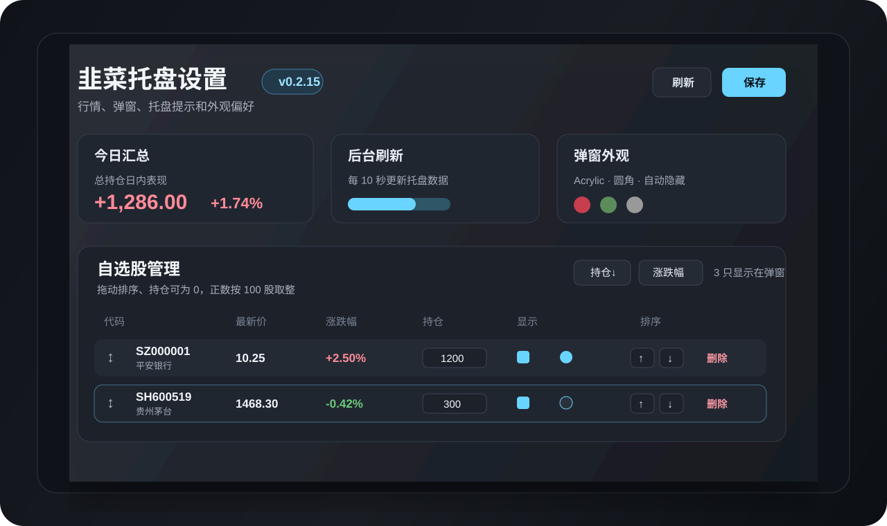
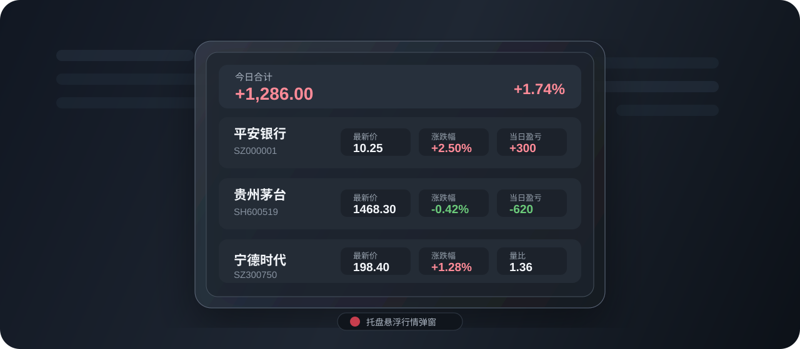

托盘常驻
启动后常驻系统托盘，左键打开或关闭行情弹窗，右键进入菜单。
软件介绍
韭菜托盘 StockTray 不试图替代完整证券交易终端。它把常用行情信息收在托盘里，平时不占桌面空间，打开弹窗后用紧凑的 Windows 11 风格界面展示价格、涨跌幅、成交指标、当日盈亏和持仓盈亏。
功能
启动后常驻系统托盘，左键打开或关闭行情弹窗，右键进入菜单。
弹窗支持透明背景、圆角、自动消失和鼠标悬停保持，适合快速扫一眼。
可配置股票代码、持仓、成本、弹窗显示和托盘提示显示。
托盘状态色会根据总持仓盈亏变化，弹窗中可显示当日和持仓盈亏。
支持价格、涨跌额、涨跌幅、成交量、成交额、量比、换手率等字段。
旧版程序目录中的 config.json 会自动迁移到用户配置目录。
功能截图


下载
Windows 安装包通过 GitHub Releases 发布。下载 StockTray_0.2.18_x64-setup.exe 后运行安装即可。
平台：Windows 10/11 · 架构：x64 · 打包：Tauri 2 + NSIS
更新日志
市场风格改用可缓存的精确概念板块成分，并优化相对占优状态、贡献说明和托盘弹窗布局。
新增小登、中登、老登风格分析、盘中证据、滑动单选交互、主题系统、持仓拖动排序与全新 ST 图标。
新增设置页手动检查更新、签名更新包和版本清单，并将价格与成本统一显示到三位小数。
改用基于 pointer 的自选股拖动排序，增强 Tauri WebView 可靠性，并强化发布脚本检查。
新增自选股拖拽排序和拖动目标高亮，保留上移、下移和排序按钮。
使用说明
常见问题
不是。它只用于个人行情查看和持仓盈亏速览，不提供交易能力，也不构成投资建议。
默认保存到 `%APPDATA%\StockTray\config.json`。旧版程序目录配置会在启动时迁移。
请先在设置页添加自选股，并确认对应股票勾选了“弹窗”显示。
可以，但项目采用 GPL-3.0-or-later。分发修改版或衍生版本时，需要遵守 GPL 的源码开放和再分发条款。
隐私说明
韭菜托盘不提供注册登录功能。自选股、持仓、成本和显示偏好保存在本机配置文件中。应用会为了获取行情访问公开行情接口，不会把你的本地配置上传到本项目服务器。
请注意，行情接口提供方可能会看到网络请求所需的基础信息，例如 IP 地址和请求时间。
开源协议
韭菜托盘使用 GNU General Public License v3.0 or later 授权。你可以自由使用、复制、分发和修改；如果分发修改版或衍生版本，需要继续遵守 GPL 并保留相同的自由软件授权。
查看完整许可证